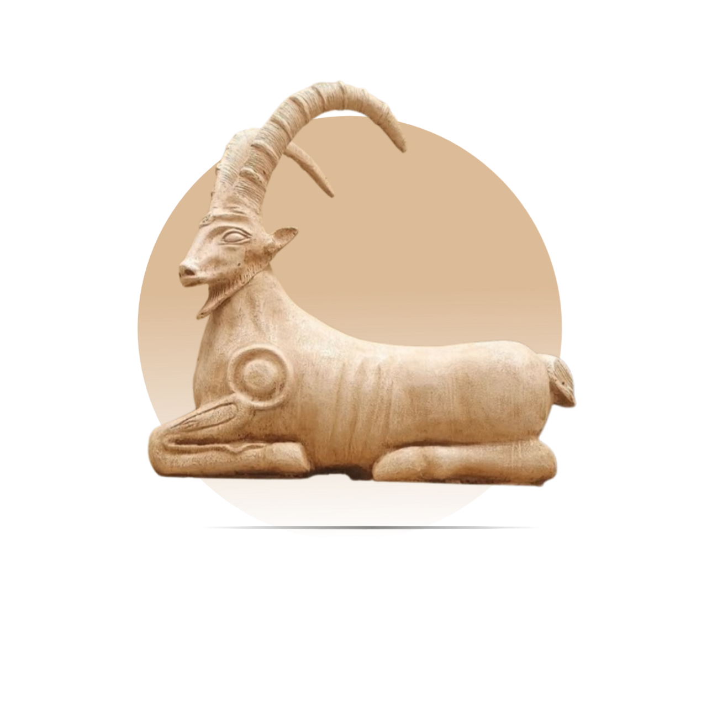
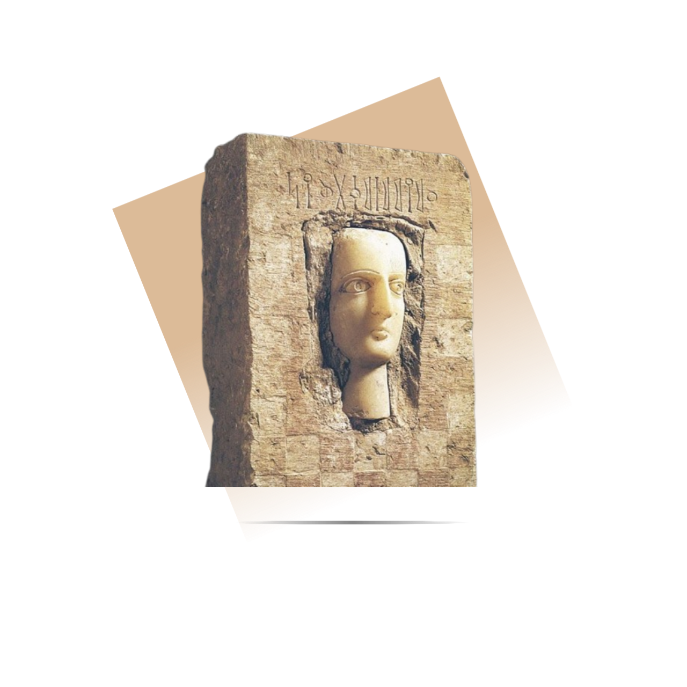
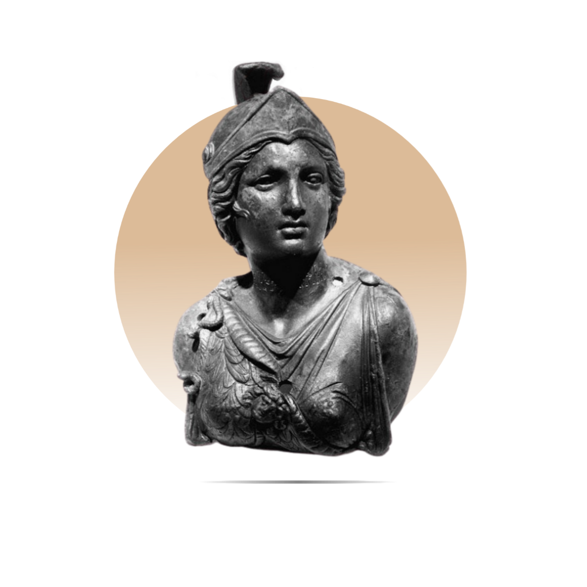
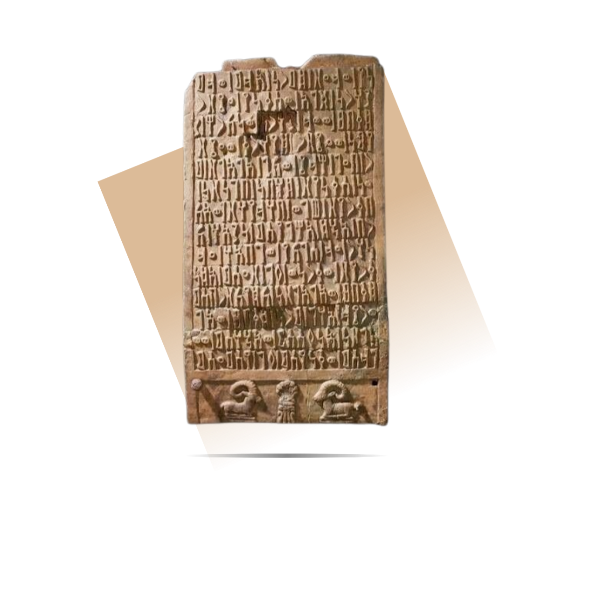
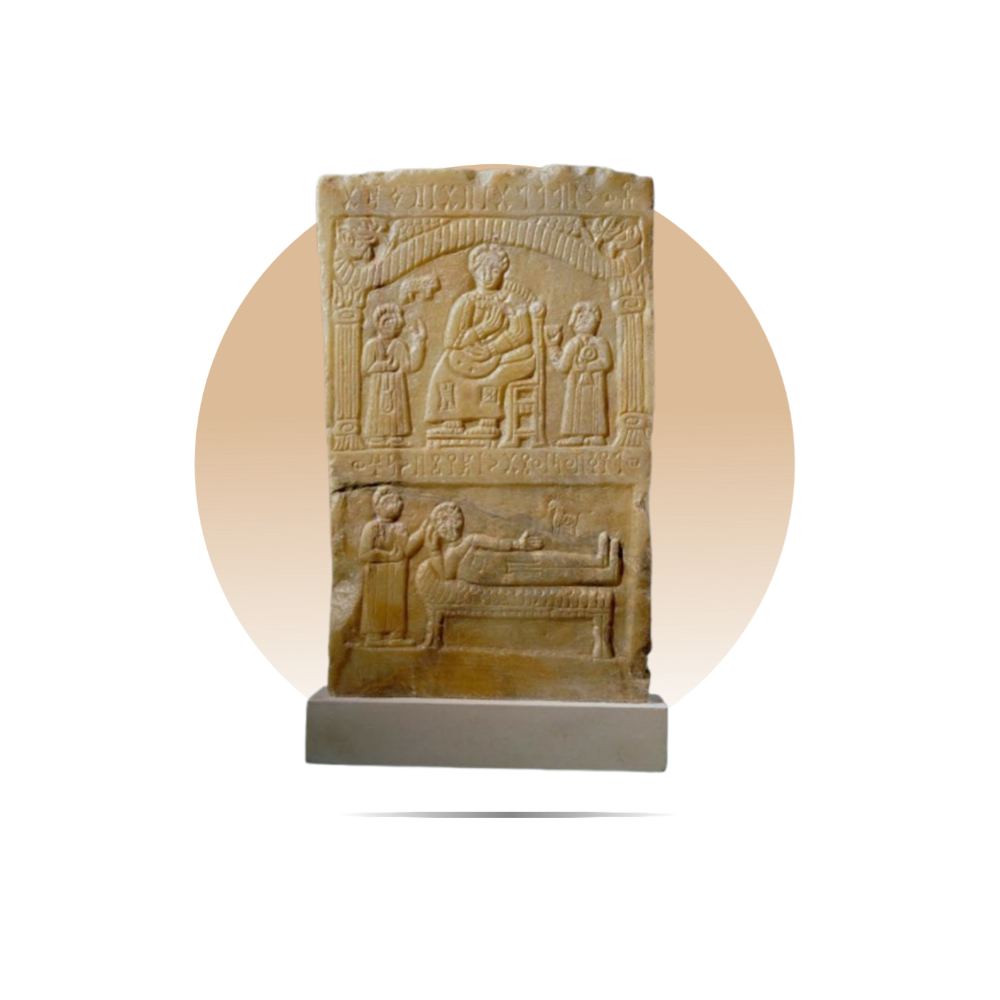
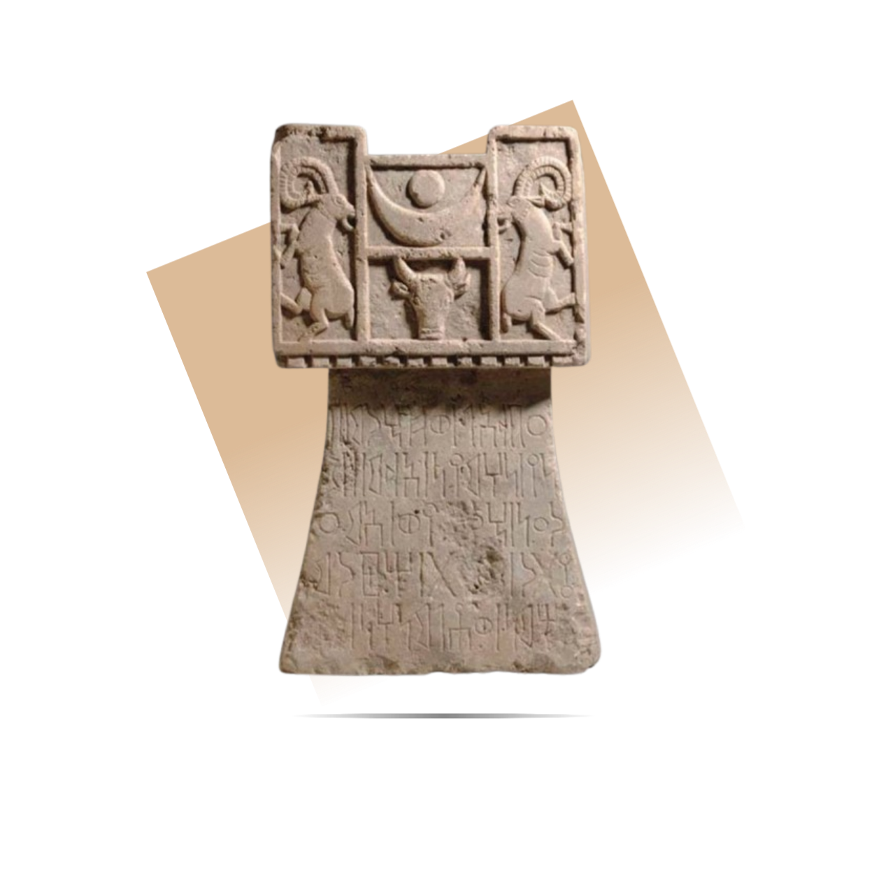

تعرف على أعظم الممالك التي صنعت التاريخ
كان الوعل اليمني رمزًا مقدسًا في مملكة سبأ، حيث استُخدم في النقوش الحجرية والمعابد كرمز للقوة والخصوبة. كان يُمثل الحماية ويُعتقد أن له دلالات دينية مرتبطة بعبادة القمر. وقد ارتبط وجوده بالمعتقدات الروحية التي كانت تمجد عناصر الطبيعة وقوى الخلق. لا تزال منحوتات الوعل شاهدةً على عظمة الفن الديني والرمزي في الحضارة اليمنية القديمة.


نصب حجري يظهر فيه وجه منحوت بدقة مذهلة داخل لوح حجري منقوش بالمسند، يُعتقد أنه لنبيل أو شخص مرموق من مملكة سبأ. كان يُستخدم في القبور أو المعابد كنوع من التذكير بالميت وخلود صورته، ويعكس تطور الفن الواقعي في الحضارة السبئية.
تمثال يُنسب للملكة "نادين شمس"، إحدى أبرز الشخصيات النسائية في تاريخ مملكة سبأ القديمة. يُظهر التمثال ملامح ملكية متزنة وتفاصيل دقيقة تدل على المكانة الرفيعة والرمزية الدينية والسياسية التي كانت تحظى بها المرأة في سبأ، ويُعد من أندر القطع التي تمثل الملكات في الفن السبئي.


نظام كتابة قديم استخدمته ممالك جنوب الجزيرة العربية، وعلى رأسها مملكة سبأ. يتميز الخط المسند بحروفه الزاويّة الأنيقة واتجاهه من اليمين إلى اليسار. استُخدم لتوثيق النقوش الدينية، الجنائزية، والقوانين، ويُعد شاهدًا حيًا على التطور الحضاري والإداري في اليمن القديم. وجوده في النقوش يعكس عناية أهل سبأ بالتوثيق والطقوس والهوية الثقافية.
لوح حجري يعود لمملكة سبأ، يُظهر مشهدًا لشخصية جالسة (يُعتقد أنه رب الأسرة أو شخصية مهمة) يحيط به شخصان في وضع تعبدي، مع مشهد جنائزي أسفل اللوح. يعكس أهمية الأسرة والطقوس الجنائزية في ثقافة سبأ، ومزود بنقوش مسندية تسجل اسم المتوفى أو تفاصيل طقسية.


لوح حجري طقسي يعود إلى مملكة سبأ، يُعتقد أنه كان يُستخدم في الممارسات الدينية أو الطقوس المرتبطة بعبادة الآلهة. يتصدر اللوح مشهد رمزي يضم رأس ثور يرمز إلى القوة والخصوبة، تتوسطه رموز القمر (هلال ودائرة) التي تشير إلى إله القمر السبئي "المقه"، بينما يقف على جانبيه وعلان جبليان، يرمزان إلى الحماية وربما يرتبطان بالشمس أو التضاريس المقدسة.